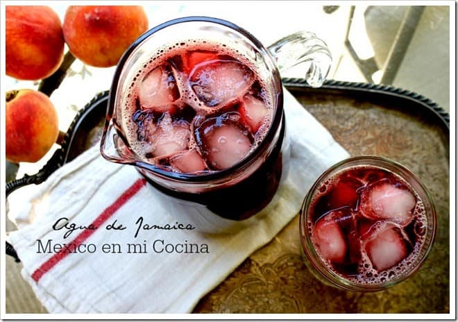

Agua de jamaica

- 1 ¼ taza de flores secas de jamaica
- 3 tazas de agua
- 4 tazas de agua en una jarra
- 1/2 de taza de azúcar
- 2 tazas de cubos de hielo
- 1. Coloca las flores en una olla pequeña con las 3 tazas de agua. Coloca en la estufa a temperatura media y espera a que hierva. Dejar hervir por 3 minutos.
- 2. Retira de la estufa y deja reposar por lo menos 4 horas. También puedes hacer este paso desde la noche anterior.
- 3. Utilizando un colador vacía el líquido de las flores en una jarra con el resto del agua y el azúcar. Puedes ajustar la cantidad de agua si crees que el sabor es muy amargo para tu paladar. Revuelve para disolver el azúcar; agrega los cubos de hielo y deja efriar.